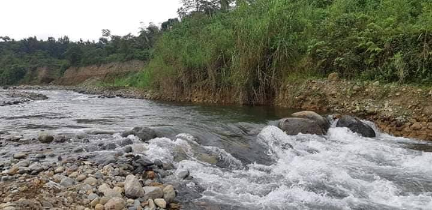
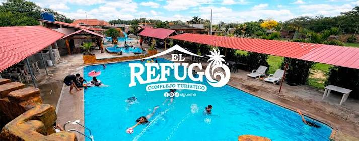
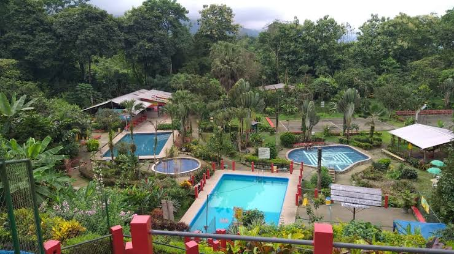
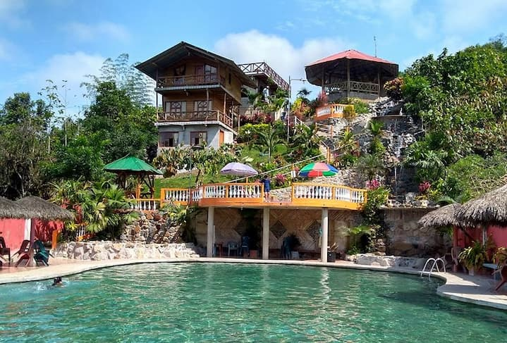
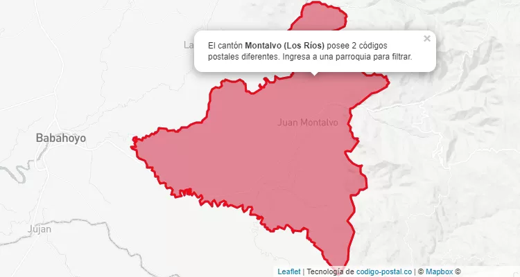

El cantón Montalvo está ubicado al sur de la provincia de Los Ríos, en Ecuador. Su nombre fue elegido en honor al escritor ecuatoriano Juan Montalvo. Antiguamente, este territorio era conocido como el recinto Sabaneta y formaba parte del cantón Babahoyo. Montalvo fue creado como cantón el 18 de abril de 1984 y celebra sus fiestas de cantonización el 17 de agosto. Se caracteriza por sus tierras fértiles, sus ríos, sus paisajes naturales y su riqueza agrícola. Entre sus principales actividades económicas se encuentran los cultivos de arroz, maíz, banano y cacao. Además, es reconocido por sus atractivos turísticos, especialmente sus ríos, cascadas y centros recreativos.

La gastronomía del cantón Montalvo combina sabores de la Costa y de la Sierra. Se caracteriza por sus preparaciones con maíz, plátano, carne de cerdo y gallina criolla. Entre sus comidas tradicionales destacan:
Fritada.Es uno de los lugares más conocidos del cantón. Es visitado por sus aguas dulces y su entorno natural, ideal para bañarse y compartir en familia.

Es un complejo ecoturístico rodeado de vegetación. Cuenta con piscinas, senderos, espacios de descanso y acceso a zonas naturales del río.

Es conocido por sus siete piscinas, su tobogán de aproximadamente 45 metros y sus espacios recreativos para disfrutar en familia.

Es un complejo turístico que ofrece piscinas, cabañas, áreas verdes y espacios para acampar. Es visitado para descansar y disfrutar de la naturaleza.

Según el Censo de Población y Vivienda de 2022 del INEC, el cantón Montalvo cuenta con 28.354 habitantes, distribuidos entre sus parroquias Montalvo y La Esmeralda.
